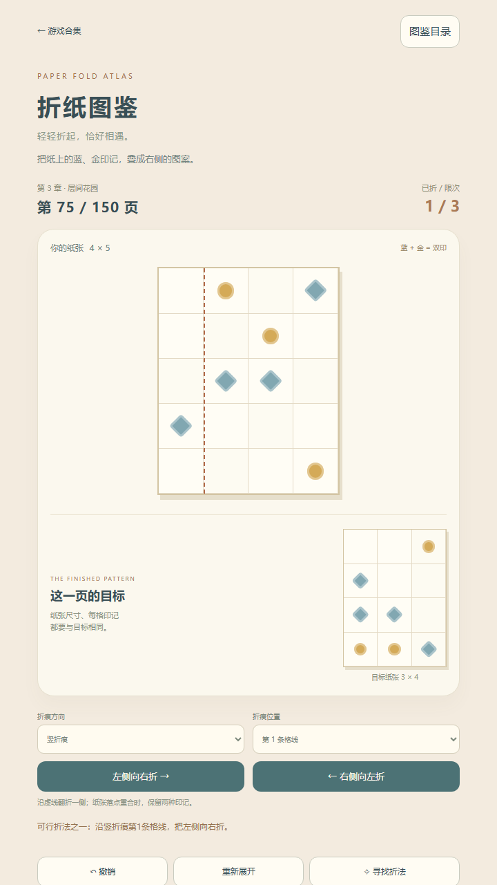

折叠 × 图案规划 / PAPER FOLD ATLAS
折纸图鉴
沿网格折痕折起纸面，把蓝、金印记送到目标位置。重叠后会合并颜色，先想一想折叠顺序。
开始的一步
对照目标图案，选一条折痕和方向。不合适就撤销，卡住可查看提示。
Fold along a grid line in the chosen direction. Overlapping blue and gold marks combine. Match the target pattern within the fold budget. Undo and hints are available. This is a discrete grid puzzle.
开始折纸 / Play →